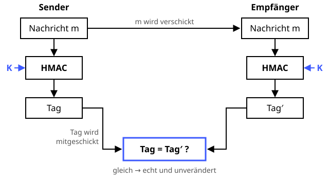

HMAC
Ein Hash mit Geheimzutat – nur wer sie kennt, kann ihn nachkochen.
Definition
Ein HMAC (Hash-based Message Authentication Code) ist eine Prüfsumme mit Schlüssel: Nur wer den gemeinsamen geheimen Schlüssel kennt, kann den richtigen Code („Tag“) berechnen. Der Empfänger rechnet nach und weiß dann, dass die Nachricht unterwegs nicht verändert wurde und von jemandem stammt, der den Schlüssel kennt.
Zutaten
- Nachricht
- Gemeinsamer geheimer Schlüssel K
- Eine Hashfunktion, z. B. SHA-256
Zubereitung
- Sender und Empfänger teilen vorab einen geheimen Schlüssel.
- Der Sender berechnet
tag = H((K ⊕ opad) ‖ H((K ⊕ ipad) ‖ m))– also zweimal hashen mit dem Schlüssel. - Nachricht und Tag werden verschickt.
- Der Empfänger berechnet den HMAC über die empfangene Nachricht selbst.
- Stimmen beide Tags überein, ist die Nachricht echt und unverändert. Sonst: wegwerfen!
Skizze

Beide berechnen den HMAC mit demselben geheimen Schlüssel K (blau). Stimmen die Tags überein, ist die Nachricht echt und unverändert.
Skizze erstellt von Claude (KI)
Demo
Platzhalter für die Demo
Tipps
- Tags immer in konstanter Zeit vergleichen, sonst verrät die Antwortzeit, wie viele Zeichen schon stimmen (Timing-Angriff).
- Kein Ersatz für eine Signatur: Beide Seiten kennen den Schlüssel, also könnte auch der Empfänger den Tag erzeugt haben.
- Nicht einfach
SHA-256(K ‖ m)bauen – das ist anfällig für Length-Extension-Angriffe. Genau dafür wurde HMAC erfunden. - Steckt z. B. in JSON Web Tokens (HS256), in TOTP-Codes und in vielen API-Signaturen.